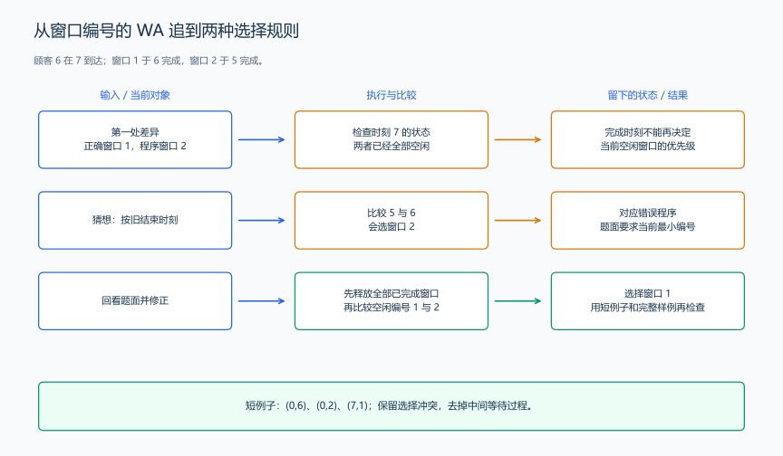

（十六） 从 WA 回到题面与模型
WA 表示程序输出与题目要求的结果不同。评测给出的 WA 通常没有写出原因，我们可以把它转成几个可核对的猜想，再通过小数据判断哪项规则被理解错了。
1. 先得到一份能解释的失败输入
保留当前提交，按题目的输入格式构造小数据，先手算正确结果，再运行提交。已经有失败输入时，按前一节的方法逐步缩小。记录输入、正确结果、程序结果和第一处差异，之后每次修改都重新运行这份数据。
例如数对程序对 [1,1,5,5]、目标 6 输出 1，手算得到 4。四个下标对是 (0,2)、(0,3)、(1,2)、(1,3)，差异集中在重复值的贡献，先检查“统计下标对”是否被写成“统计不同取值组合”。
2. 用不同现象区分可能的误读
| 失败现象 | 优先回看的题意 | 能区分猜想的小输入 |
|---|---|---|
| 一个元素也被算成一对 | “两个不同下标” | [3]、目标 6，应为 0 |
| 重复元素时数量偏少 | “不同位置分别计数” | [1,1,5,5]、目标 6，应为 4 |
| 每对都被算了两遍 | 下标对是否有顺序 | [1,5]、目标 6，应为 1 |
| 结束与到达同刻时安排变晚 | “结束时刻即可接待” | 一个窗口，顾客为 (0,2)、(2,1)，第二位在 2 开始 |
| 多个窗口都空闲时编号不对 | “选择最小空闲编号” | 样例顾客 6，在时刻 7 应选窗口 1 |
| YES/NO 正确，但方案被判错 | 输出编号与操作执行规则 | 灯为 11 时，翻转左侧编号应为 1 |
| 小数据相同，大计数不同 | 答案表示的是累计量还是单项值 | 200000 项 3、目标 6，答案为 19999900000 |
这些现象给出排查顺序。接着仍要对照运行过程：数量偏少既可能来自错误去重，也可能来自正确模型中漏掉某次频次更新。逐步看状态，才能区分二者。
3. 完整推演：从窗口编号错误找回选择规则
假设一个程序只用 (上次结束时刻,窗口编号) 的小根堆。它在前五位顾客上与样例一致，却把顾客 6 安排给窗口 2。先停在第一处差异，不继续比较后面的总等待时间。
此时顾客在 7 到达，窗口 1 于 6 结束，窗口 2 于 5 结束。两者都空闲。列出程序可能使用的规则及各自预测：
| 可能的理解 | 在时刻 7 的预测 | 与题面对应的文字 |
|---|---|---|
| 选择最早变空闲的窗口 | 窗口 2 | 程序把旧结束时刻继续用于当前选择 |
| 选择当前空闲窗口中的最小编号 | 窗口 1 | 题面明确要求多个空闲时选最小编号 |
| 每次轮流选择窗口 | 取决于上一位编号 | 题面没有安排轮转动作 |

再去掉前面的等待过程，只保留两位已经完成的顾客与后来的一位：两个窗口，输入 (0,6)、(0,2)、(7,1)。前两位分别使用窗口 1、2；第三位仍应使用窗口 1。这个短例子保留了错误，却去掉了可能干扰判断的排队细节。
问题出在：完成时间用于确定窗口何时空闲，编号用于决定当前选哪个空闲窗口。 把全部已完成记录转到按编号排序的空闲堆，就让两项规则各自对应到一个动作。修正后，重新核对短例子、完整样例和同刻完成的例子。
4. 把推测变成可以重复检查的证据
每次只针对一个猜想构造数据。例如怀疑同刻动作顺序，就让结束与到达相等；怀疑重复计数，就只保留两三个相同值。先写下这个猜想预测的输出，再运行代码，避免看到结果之后再随意解释。
若手算已经违背题面的明确规则，回到文字重新建模；若手算符合规则而程序不同，继续比较状态和更新顺序。对拍发现差异时也沿着同一条路线处理：保留数据、定位第一处变化、解释为什么该动作错误，再修改实现。
把修正后的失败输入留在验证程序或练习记录中。下一次修改代码时先运行它，既能确认问题没有再次出现，也能提醒自己当时漏读的是哪一句题意。